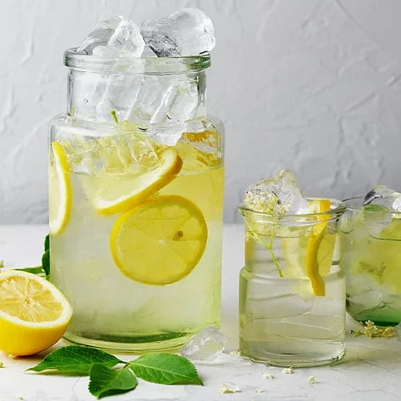

Cordial Recipe (Saft)
Home

Description
Cordial, also called "saft" in Swedish. Is my favourite drink. People sometimes think I drink too much cordial but the truth is there is never enough cordial that one can chug down after a long warm day trying to fix PHP errors.
This recipe will take about 10-15 minutes and will focus on a Lemon cordial drink, although you can swap it out for any citrus fruit that you prefer.
What you'll need
Tools
- Lemon Juicer
- Zester / Grater
- Saucepan
- Spoon
- Bottle for storage
- Sieve / Filter
Ingredients
- 500ml lemon juice (~8-10 lemons)
- 500ml water
- 500g granulated sugar
Steps
- Zest the lemons until you have approximately half a cup of zest.
- Juice the lemons until you have 500ml juice.
- Put the sugar and water into a saucepan and bring to a boil.
- Remove from the mixture from the heat and stir through the zest and juice.
- Return to the heat and heat until it starts to thicken.
- Remove from heat and allow to cool.
- Pass through a sieve.
- Store in a clean bottle. Store in a cool area, preferably in your fridge.
- Mix one part lemon cordial with three parts water to make up a drink.